共享运行时：不要让每个应用都重复建设 Agent
很多团队推进 AI Coding 时，会自然地从应用出发：订单应用写一套 Agent，营销应用写一套 Agent，结算应用再写一套 Agent。每套 Agent 都有自己的 Prompt、Command、Skill、规则文档和任务目录。短期看，这种方式贴近业务，启动也快；长期看，它会把团队拖进重复建设。
真正重复的部分并不是业务知识，而是需求进入、任务状态、阶段产物、上下文组织、验证证据和任务归档这些基础能力。如果每个应用都重新实现一遍，团队会很快遇到行为不一致、质量口径不统一、历史经验难复用、工具升级成本高的问题。
共享运行时的目标，是把通用交付能力放到一套稳定边界里。应用差异通过规则、案例和少量定制命令扩展，而不是每个应用都重写一套 Agent 系统。
一句话结论：应用差异应该资产化，通用流程应该运行时化。
常见误区
| 误区 | 表现 | 后果 |
|---|---|---|
| 按应用建设完整 Agent | 每个应用都有自己的流程、状态、规则和验证 | 通用能力重复实现，行为难统一 |
| 把运行时放进某个工具 | 任务状态只存在某个 IDE 插件或聊天工具里 | 换工具、换会话、换人后难恢复 |
| 只沉淀 Prompt，不沉淀产物 | Prompt 很强，但 PRD、设计、计划、验证都散落 | 交付过程不可审查 |
| 没有状态真相源 | 当前阶段靠聊天记忆判断 | 恢复、暂停、变更、归档都不可靠 |
| 运行时目录无限膨胀 | 每个能力都新增顶层文件 | 后期维护和归档成本上升 |
共享运行时要解决的是“通用交付能力应该放在哪里、由谁维护、如何被不同工具复用”。
一、为什么这件事容易被低估
很多团队一开始会觉得“先让每个应用自己跑起来就行”。这个判断在试点期没问题，但一旦进入团队规模化，重复建设会快速放大。
| 应用数 | 如果每个应用自建 Agent | 最容易出现的问题 |
|---|---|---|
| 1 个 | 看起来很灵活 | 规则和流程还没暴露复用问题 |
| 3 个 | 每个应用开始有自己的 Prompt 和脚本 | 同一条工程规范出现多个版本 |
| 10 个 | 工具升级、规则变更、流程调整都要多处同步 | 团队质量口径失控 |
| 30 个以上 | 平台团队变成 Prompt 和脚本维护团队 | 新应用接入成本越来越高 |
共享运行时不是为了“平台化好看”，而是为了避免团队把通用交付能力重复实现几十遍。
设计原则
第一，任务状态独立于 AI 工具。Claude、OpenCode、Codex 或自研 IDE 插件都可以接入，但任务真相源不应该只存在某个工具的会话中。
第二，稳定产物和派生产物分层。PRD、设计、计划、总结是稳定产物；代码索引、上下文 JSONL、selector cache 是可重建产物。两类文件的 owner 和生命周期不能混在一起。
第三，应用扩展不能破坏运行时边界。应用可以有自己的 SPEC、Skill、Command，但不应该重新定义任务状态、阶段流程和验证证据格式。
二、案例拆解：一个共享运行时长什么样
这类框架通常会把共享运行时放在项目内 .team-agent/ 目录。这个目录不属于某一个 Agent，也不属于某一个 AI 工具，而是所有适配层共同消费的任务工作区。
.team-agent/
├── .current-task
├── config.json
├── workflow/
│ └── phase-contracts.json
├── tools/
│ ├── task.js
│ ├── build-prd.js
│ ├── code-index.js
│ ├── context-selection.js
│ └── spec-context.js
├── spec/
│ ├── team/
│ └── app/
├── code-index/
│ └── index.json
└── tasks/
├── {taskId}/
│ ├── task.json
│ ├── prd.md
│ ├── design.md
│ ├── plan.md
│ ├── plan.tasks.json
│ ├── summary.md
│ ├── generated/context/
│ ├── evidence/verification-ledger.jsonl
│ └── context/archive-recall.json
└── archive/
└── index.jsonl
这套目录里有几类边界：
| 层级 | 代表文件 | 作用 |
|---|---|---|
| 任务指针 | .team-agent/.current-task |
指向当前 active task |
| 状态真相源 | tasks/{taskId}/task.json |
保存当前阶段、任务元信息、恢复所需状态 |
| 稳定产物 | prd.md、design.md、plan.md、summary.md |
给人和 Agent 审查的交付文档 |
| 派生产物 | generated/context/*.jsonl、code-index/index.json |
可由 builder 重建的上下文材料 |
| 执行证据 | evidence/verification-ledger.jsonl |
记录验证命令、结果、失败分类 |
| 规则资产 | spec/team/**、spec/app/** |
团队规则和应用差异 |
| 历史资产 | tasks/archive/index.jsonl |
已完成任务的案例索引 |
一个最小任务状态可以这样表达：
{
"taskId": "123456",
"workflowKind": "feature",
"status": "in_progress",
"currentStepId": "plan_delivery",
"branch": "feature/prize-type",
"steps": [
{ "id": "tech_design", "status": "completed" },
{ "id": "plan_delivery", "status": "in_progress" },
{ "id": "develop_feature", "status": "pending" }
],
"meta": {
"contextMode": "expanded",
"contextRisks": ["large_prd"]
}
}
这个状态只保存流程恢复需要的信息。它不保存完整 PRD，不保存代码索引，不保存所有规则正文，也不保存测试日志全文。这些内容属于对应 artifact。
文件 owner 要先定清楚
共享运行时最容易膨胀的原因，是每个人都觉得自己可以往任务目录里加文件。建议一开始就把 owner 和生命周期写清楚。
| 文件或目录 | Owner | 生命周期 | 规则 |
|---|---|---|---|
.current-task |
控制面 | active task 期间 | 只保存当前任务 ID，归档后清理 |
task.json |
控制面 | active + archive | 只保存流程状态和恢复必要事实 |
prd.md / design.md / plan.md / summary.md |
对应阶段 Agent 或负责人 | 稳定产物 | 人可以审查，不能被 builder 随意覆盖 |
generated/context/* |
context builder | 可重建 | 缺失或过期时重建，不作为真相源 |
evidence/* |
worker / verifier | 追加型证据 | 不覆盖历史记录，失败也要记录 |
spec/** |
团队或应用 owner | 长期资产 | 需要来源、适用范围和维护入口 |
archive/index.jsonl |
归档流程 | 长期索引 | 用于后续弱召回，不替代当前需求 |
这个表越早建立，后续越少出现“某个脚本顺手改了状态”“某个 Agent 覆盖了 PRD”“缓存文件被当成事实”的问题。
三、多工具为什么能共享运行时
共享运行时的一个重要价值，是把工具差异放到 adapter，而不是放到任务状态里。

在这个结构下，不同工具可以有自己的命令格式、hook 机制和上下文注入方式，但它们不重新定义任务目录。这样做有两个好处：
- 换工具时，任务状态和历史产物还能保留。
- 多个入口协作时，不会出现“这个工具认为任务完成，另一个工具不知道”的状态分裂。
一个判断方法是：如果明天把当前 AI 工具换掉，tasks/{taskId}/ 里的 task.json、prd.md、design.md、plan.md、summary.md 和验证证据还能不能被新工具继续消费？如果不能，说明任务状态被工具私有实现绑住了。
运行时要避免什么
共享运行时不是把所有东西都塞进一个目录。它要控制文件预算和 owner。
| 不建议 | 原因 | 更合适的做法 |
|---|---|---|
| 每个阶段都新增顶层状态文件 | 状态来源变多，恢复逻辑复杂 | 统一写入 task.json 或阶段 artifact |
| 把 selector 结果写入任务状态 | 可重建上下文污染真相源 | 写入 cache 或 generated context |
把测试日志全文写入 task.json |
状态文件膨胀 | 写入 verification ledger 或 evidence 文件 |
| 把历史案例直接注入会话 | 上下文不可控 | 作为弱引用，在设计/计划前按预算召回 |
| 应用自定义流程覆盖主流程 | 团队质量口径不一致 | 应用通过 SPEC 和专项 Command 扩展 |
共享运行时越稳定，应用扩展越容易。反过来，如果运行时边界混乱，后续每个能力都会变成补丁。
运行时成熟度分级
团队可以用下面的分级判断自己该做到哪一步。
| 级别 | 运行时能力 | 适合阶段 |
|---|---|---|
| L0 聊天驱动 | 只有聊天记录和代码 diff | 个人试用 |
| L1 产物驱动 | 每个任务有 PRD、设计、计划、总结 | 小团队试点 |
| L2 状态驱动 | 有 task.json、当前任务指针、阶段状态 |
多人接力 |
| L3 上下文驱动 | 有 PRD/code working set、规则选择、验证 ledger | 多应用推广 |
| L4 协作驱动 | 有 review request、Feature Room、归档召回和指标 | 团队规模化 |
不要跳级。L1 没做好就做 L4，最后会变成一个展示漂亮但产物不可审查的面板。
四、团队参考做法
其他团队可以先定义一个最小运行时目录：
.team-agent/
├── current-task
├── tools/
├── workflow/
├── spec/
│ ├── team/
│ └── app/
├── tasks/
│ └── {taskId}/
│ ├── task.json
│ ├── prd.md
│ ├── design.md
│ ├── plan.md
│ ├── plan.tasks.json
│ ├── summary.md
│ ├── context/
│ └── evidence/
└── archive/
└── index.jsonl
第一阶段只做四个约束：
- 所有任务必须进入统一任务目录。
- 当前任务只通过
current-task指向。 - 需求、设计、计划、总结必须是稳定 artifact。
- 上下文和验证证据不能只留在聊天里。
第二阶段再引入 code-index、context selector、archive recall、多工具 adapter 和 Web 协作工作台。不要一开始就做大平台。共享运行时最早要解决的是状态和产物，而不是复杂 UI。
五、检查清单
- 团队是否有统一任务目录？
- 当前任务是否能脱离聊天记录恢复？
- PRD、设计、计划、总结是否有稳定文件？
- 派生产物是否可以重建，而不是写死在任务状态里？
- 不同 AI 工具是否共享同一套任务状态？
- 应用差异是否通过 SPEC 扩展，而不是重写流程？
- 任务完成后是否进入 archive？
- 运行时目录是否有文件预算和 owner 规则？
六、思考与实践
- 你们团队现在 AI Coding 的任务状态在哪里？聊天记录、Issue、PR，还是统一任务目录？
- 如果新接入一个应用，你们会复制一套 Agent，还是复用同一套运行时后只补应用规则？
- 你们最小可接受的
.team-agent/目录应该包含哪些文件？
七、结尾
共享运行时是团队 AI Coding 的底座。没有它，Agent 越多，状态越散，经验越难沉淀。先把任务状态、阶段产物、规则、上下文和验证证据放到同一个工程边界里，后续的 SPEC、上下文选择、验证治理和协作面才有承载点。
下一篇进入 SPEC 体系：为什么团队规则不应该继续堆在 Prompt 里，以及如何让规则变成可检索、可审查、可维护的工程资产。